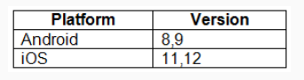
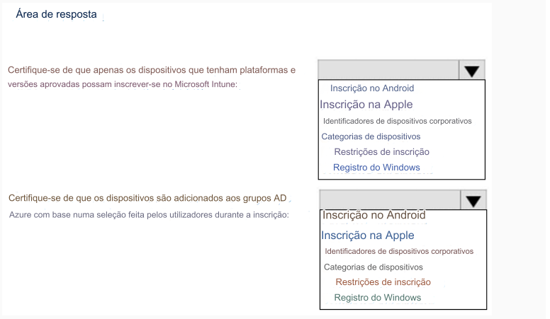

208- PONTO DE ACESSO
Você tem uma assinatura do Microsoft 365.
Você planeja registrar dispositivos no Microsoft Intune que tenham as plataformas e versões mostradas na tabela a
seguir.

Você precisa configurar o registro do dispositivo para atender aos seguintes requisitos:
• Certifique-se de que apenas dispositivos com plataformas e versões aprovadas possam se inscrever no Microsoft Intune.
• Certifique-se de que os dispositivos sejam adicionados aos grupos do Azure AD com base em uma seleção feita pelos usuários
durante a inscrição.
Qual configuração de registro de dispositivo você deve definir para cada requisito? Para responder, selecione
as opções apropriadas na área de resposta.
NOTA: Cada seleção correta vale um ponto.
